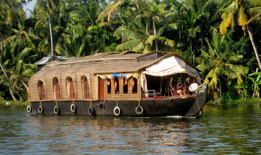

Alapuzha
Venice of the East
Alappuzha, also known by its former name Alleppey, is the administrative headquarters of Alappuzha District in the Indian State of Kerala. Alappuzha is a city and a municipality in Kerala with an urban population of 174,164 and ranks third among the districts in literacy rate in the State of Kerala. In 2016, the Centre for Science and Environment rated Alappuzha as the cleanest town in India. Alappuzha is considered to be the oldest planned city in this region and the lighthouse built on the coast of the city is the first of its kind along the Laccadive Sea coast.
The city is situated 28 km from Changanacherry, 46 km from Kottayam, 55 km from Kochi, 129.4 km from Thrissur and 155 km north of Trivandrum. A town with canals, backwaters, beaches, and lagoons, Alappuzha was described by Lord Curzon as the "Venice of the East." Hence, it is known as the "Venetian Capital" of Kerala. In Alappuzha, Malayalam is the most spoken language.
It is an important tourist destination in India. The Backwaters of Alappuzha is one of the most popular tourist attractions in Kerala which attracts millions of domestic and international tourists to the district and employs vast number of locals in the private sector. A houseboat cruise in these backwaters can be booked. It connects Kumarakom and Cochin to the North and Quilon to the South. Apart from houseboat services, the Kerala State Water Transport Department provides government boat services within the district and Quilon (Kollam) which considers the best and cheapest way to explore the Backwaters of Alleppey.
It is also the access point for the annual Nehru Trophy Boat Race, held on the Punnamada Lake, near Alappuzha, on the second Saturday of August every year. This is the most popular and competitive boat races in India. Mullackal Chirap is the major Temple Festival of Alapuzha which is held for ten days every year in end of December.
Other attractions in and around Alappuzha are Alappuzha Beach, offering a views of the Laccadive Sea, Pathiramanal Island, Mullakkal Sree RajarajeswariTemple, Kalarkod Mahadeva Temple, Pazhaveed Bhagavathi Temple ,Ambalappuzha Sri Krishna Temple, St. Andrew's Basilica, Arthunkal, Mannarasala Temple, Cheriyanad Sree Bhalasubhramanya Swamy TempleChettikulangara Devi Temple, Haripad Sree Subrahmanya Swamy temple, Krishnapuram Palace, Thakazhy Sree Dharma Sastha Temple, Kidangamprambu Temple, Munnodi Temple, Valiya Kalavur Sreekrishna Temple, Mararikkulam Mahadeva Temple, Thiruvizha Sree Mahadevar Temple, Kanichukulangara Bhagavathi Temple, Cherthala Karthyayani Temple, Varanad Devi Temple, Cheriya Kalavur Ayyappa Temple, Padanilam Parabrahma Temple, Edathua Church, Alappuzha CSI Christ Church (oldest Anglican church in Central Kerala) and Champakulam Valia PalliVetticode Sree Nagaraja Seamy Temple(Vetticode-The first and old Nagaraja Temple).
Alappuzha is home to the Punnapra-Vayalar uprising against the Separate American Model independent Travancore proposal and also the revolt against the Feudal raj. Communist Party members were killed by the army of the Diwan, 200 people at Punnapra on 24 October 1946 and more than 150 at Vayalar on 27 October 1946. The total loss of life is allegedly estimated to be more than a thousand. Coir is the most important commodity manufactured in Alappuzha. The Coir Board was established by the Central Government under the provisions of the Coir Industry Act, 1955. A Central Coir Research Institute is located at Kalavoor.
Gallery
